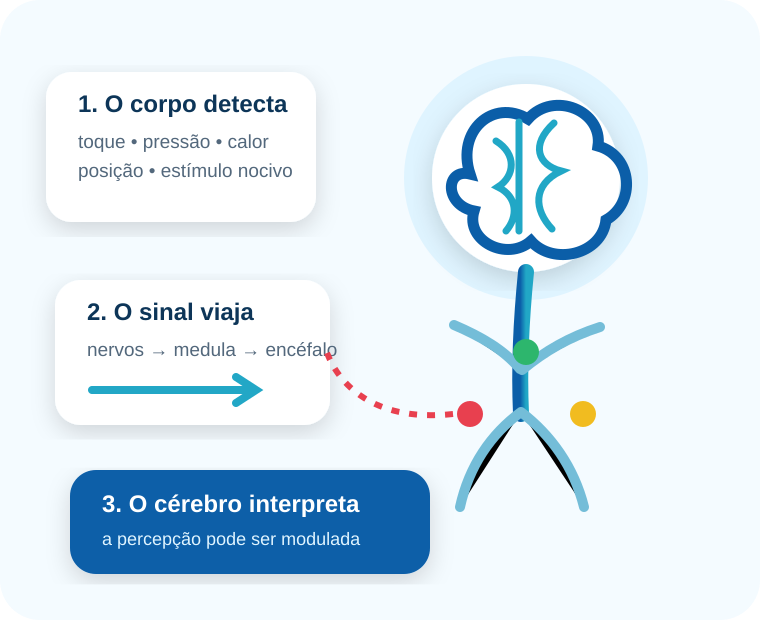
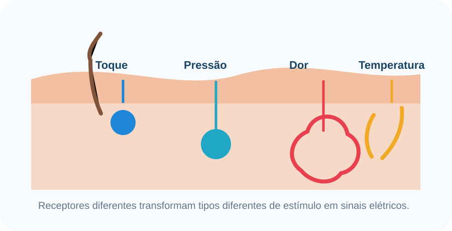
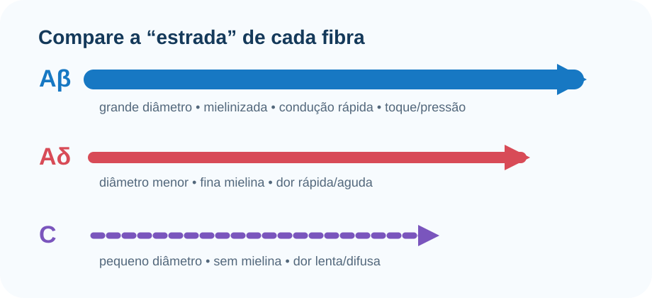
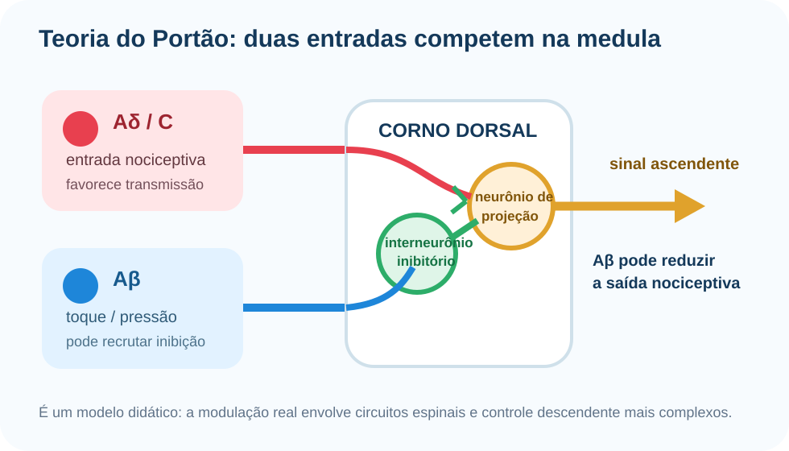
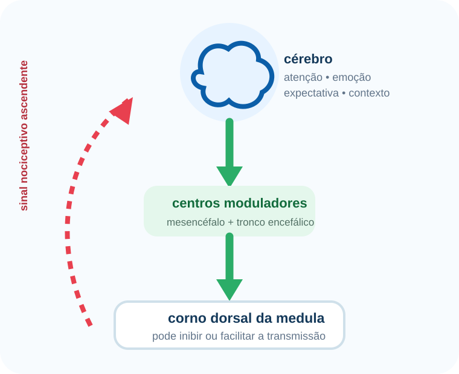
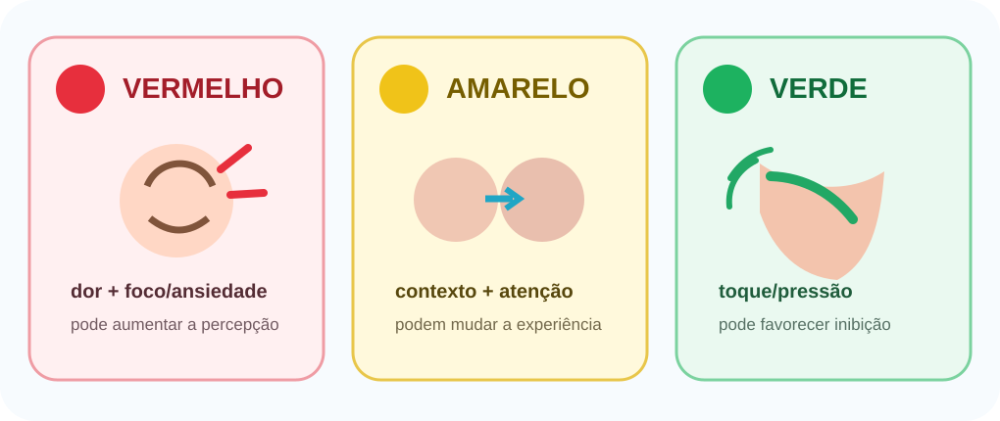

Conteúdo em partes
Uma etapa de cada vez evita jogar todo o assunto na tela de uma só vez.
Você não vai decorar uma lista solta. O site segue o caminho real da informação: detectar → conduzir → processar → modular → aplicar.

Uma etapa de cada vez evita jogar todo o assunto na tela de uma só vez.
Os diagramas mostram relações espaciais e o texto explica o que observar.
Pequenas perguntas aparecem após cada etapa antes da revisão final.
O site sugere revisões depois do estudo para reduzir o esquecimento.
O princípio de segmentação favorece mensagens multimídia divididas em partes controladas pelo aluno; o princípio de sinalização usa pistas visuais para direcionar atenção ao essencial. Revisões sobre prática de recuperação mostram benefício ao tentar lembrar ativamente, e a prática distribuída favorece retenção em comparação com estudo concentrado.
Use esta sequência como a espinha dorsal da matéria. Todo o restante se encaixa nela.
ETAPA 1 • PERCEBER
Objetivo: diferenciar modalidades sensoriais e entender o papel dos receptores.
Receptores sensoriais são “tradutores”: transformam energia mecânica, térmica ou potencialmente nociva em sinais elétricos.

É o conjunto de mecanismos que permite perceber informações vindas principalmente da pele, músculos, tendões e articulações.
Transdução é a conversão da energia do estímulo em alteração elétrica na célula sensorial. Quando essa alteração atinge condições suficientes, surgem potenciais de ação na fibra aferente, que levam a informação ao sistema nervoso central.
ETAPA 2 • CONDUZIR
Objetivo: diferenciar Aβ, Aδ e C e visualizar as principais vias ascendentes.
Diâmetro e mielina influenciam a velocidade: fibras maiores e mais mielinizadas conduzem mais rápido.

Grande diâmetro, mielinizada e rápida. Leva informação mecanossensorial e pode participar da inibição da transmissão nociceptiva.
Macete: Aβ = “toque rápido”.Menor que Aβ, com mielina fina. Está associada à dor inicial mais aguda e relativamente bem localizada.
Macete: Aδ = “agulhada rápida”.Pequena, sem mielina e lenta. Relaciona-se à dor mais difusa, persistente ou em queimação.
Macete: C = “continua e demora”.Principalmente: tato discriminativo, vibração e propriocepção.
Principalmente: dor, temperatura e tato grosseiro.
ETAPA 3 • PROCESSAR
Objetivo: separar nocicepção de dor e entender por que duas pessoas podem sentir diferente.
Detecção, codificação e transmissão neural de estímulos potencialmente lesivos.
Experiência sensorial e emocional desagradável. É pessoal e depende do processamento do sistema nervoso.
Mais lesão não significa necessariamente mais dor na mesma proporção. O dano e a nocicepção importam, mas a experiência final também é modulada pelo sistema nervoso e pelo contexto.
Focar intensamente no estímulo pode aumentar sua saliência; distração pode reduzir a percepção em algumas situações.
Ansiedade, medo e estresse alteram redes cerebrais e podem modificar a experiência dolorosa.
Expectativa, experiências anteriores e significado atribuído ao estímulo participam da interpretação.
“A dor é uma experiência sensorial e emocional desagradável associada, ou semelhante à associada, a dano tecidual real ou potencial.”
IASP — definição revisada (tradução explicativa)
ETAPA 4 • MODULAR
Objetivo: entender o Portão da Dor e o controle descendente.
A transmissão nociceptiva não é uma linha direta e fixa: circuitos na medula e sinais do encéfalo podem inibir ou facilitar a passagem.

O portão não é uma porta física. É uma metáfora para o balanço entre atividade excitadora e inibitória no circuito espinal.
A animação mostrará o efeito conceitual sobre a transmissão.
O toque ativa aferentes de maior diâmetro, como Aβ. Essa atividade pode recrutar interneurônios inibitórios no corno dorsal e reduzir a transmissão nociceptiva para neurônios de projeção.

O cérebro também envia sinais de cima para baixo. Regiões do mesencéfalo e tronco encefálico participam de circuitos que podem inibir ou facilitar a nocicepção na medula.
ETAPA 5 • APLICAR
Objetivo: classificar situações e explicar o mecanismo, em vez de apenas decorar a cor.

Uma pessoa sofre uma lesão e há intensa ativação de receptores de dor.
🔴 VermelhoHá forte entrada nociceptiva.Uma pessoa sofre um estímulo doloroso e fica extremamente focada nele.
🔴 VermelhoA atenção pode aumentar a percepção da dor.Uma pessoa sente dor e fica muito ansiosa e preocupada com o que está acontecendo.
🔴 VermelhoFatores emocionais podem aumentar a percepção.Uma pessoa está sentindo dor, mas começa a conversar e se distrair com outra atividade.
🟡 AmareloA atenção e o contexto podem modificar a percepção.Duas pessoas recebem estímulos semelhantes, mas relatam intensidades diferentes de dor.
🟡 AmareloA experiência é influenciada por fatores individuais e pelo processamento do sistema nervoso.Uma pessoa sente um estímulo doloroso enquanto está em uma situação de muito estresse.
🟡 AmareloO estado emocional pode influenciar a modulação da dor.Uma pessoa recebe um estímulo sensorial e o cérebro interpreta a informação antes de determinar como ela será percebida.
🟡 AmareloA percepção não depende apenas do estímulo periférico.Depois de bater a perna, uma pessoa esfrega suavemente o local.
🟢 VerdeEstímulos táteis podem inibir a transmissão nociceptiva.Uma pessoa recebe estimulação tátil em uma região dolorida.
🟢 VerdeFibras sensoriais de maior diâmetro podem favorecer inibição.Uma pessoa sente dor e recebe uma estimulação sensorial que ativa mecanismos inibitórios da dor.
🟢 VerdeOcorre modulação inibitória/descendente.Circuitos nociceptivos podem ficar mais responsivos após inflamação ou estímulo persistente.
Perdas diferentes de tato, dor, temperatura ou propriocepção ajudam a localizar lesões neurológicas.
Intervenções sensoriais podem explorar mecanismos de modulação, embora a resposta clínica varie.
CONSOLIDAÇÃO
Primeiro responda mentalmente. Só depois revele a resposta.
Sensibilidade somática inclui tato, pressão, vibração, temperatura, nocicepção e propriocepção.
Receptores transformam estímulos em sinais elétricos.
Aβ: grande, mielinizada, rápida; toque e pressão.
Aδ: dor mais rápida, aguda e melhor localizada.
C: pequena, amielínica, lenta; dor mais difusa/persistente.
Nocicepção é processo neural; dor é experiência sensorial e emocional.
O corno dorsal é um ponto central de integração e modulação.
Aβ pode recrutar circuitos inibitórios e reduzir transmissão nociceptiva.
Vias ascendentes levam informação para tálamo e múltiplas regiões encefálicas.
Vias descendentes podem inibir ou facilitar circuitos nociceptivos.
Atenção, emoção e contexto podem modificar a percepção dolorosa.
Dor não é uma régua direta do tamanho da lesão.
Terminação sensorial especializada em detectar estímulos potencialmente lesivos.
Processos neurais de detecção, codificação e transmissão de estímulos nocivos.
Dor provocada por estímulo que normalmente não seria doloroso.
Resposta dolorosa aumentada a um estímulo que normalmente já é doloroso.
Percepção da posição e do movimento do corpo.
Região posterior da substância cinzenta da medula onde chegam muitas aferências sensoriais.
Neurônio local que reduz a atividade de outros neurônios do circuito.
Controle exercido por centros encefálicos sobre circuitos nociceptivos da medula e tronco encefálico.
O conteúdo foi organizado a partir da atividade do grupo e aprofundado com fontes de neurofisiologia e ciência da aprendizagem.